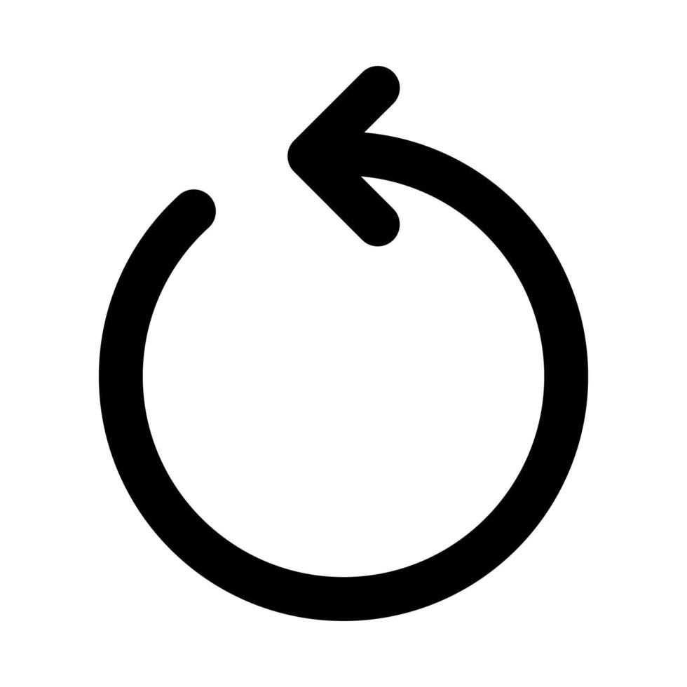

Seja bem-vindo ao nosso Quiz de Conhecimentos Gerais! Prepare-se para testar sua sabedoria em uma variedade de temas, desde ciência e história até cultura pop e curiosidades do dia a dia. Este é o momento de desafiar sua memória, aprender algo novo e, claro, se divertir! Então, afie sua mente, respire fundo e boa sorte! Que comece o desafio!
Quantas casas decimais tem o número pi?
Desistir não deveria existir no seu vocabulário! Desafie-se nessa aventura do conhecimento.
Hum... que tal
Quais o menor e o maior país do mundo respectivamente?
Qual planeta está mais próximo do Sol?
Quantos integrantes tem o grupo de k-pop Bangtan Boys, conhecido como BTS?
Como se chamam os dois melhores amigos do personagem Harry Potter?
Como é chamado o triângulo que tem os três lados iguais?
Um anel tem 3 pedras preciosas. Quantas pedras preciosas têm 11 anéis?
Qual o nome popular do cloreto de sódio?
Qual a personagem mais famosa de Maurício de Sousa?
Parabéns você concluiu essa aventura do conhecimento